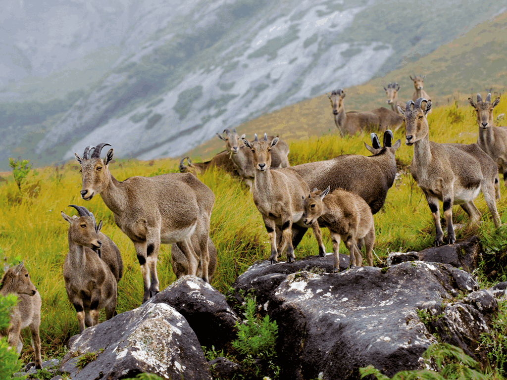
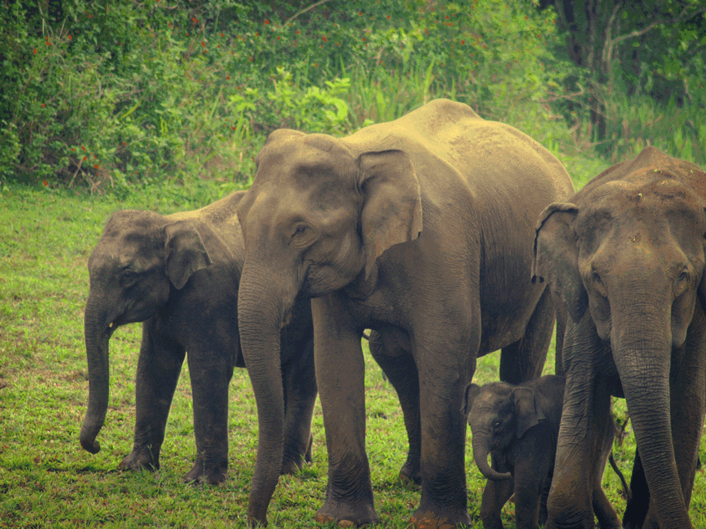
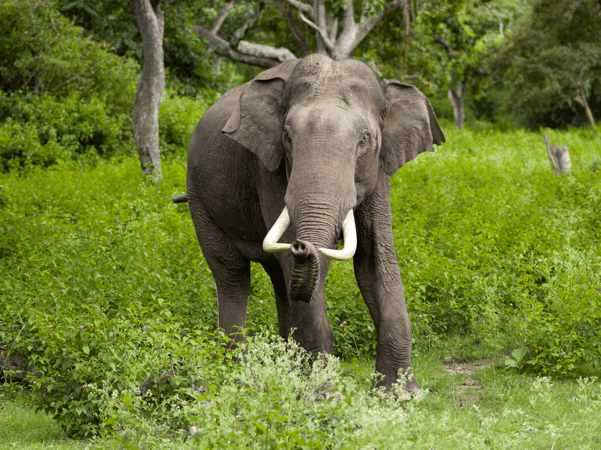

| Services | Bookings | Contact us |
|---|
|
Forests, the natural wealth of Kerala Most of Kerala, whose native habitat consists of wet evergreen rainforests at lower elevations and highland deciduous and semi-evergreen forests in the east, is subject to a humid tropical climate. However, significant variations in terrain and elevation have resulted in a land whose biodiversity registers as among the world’s most significant. But the district Alappuzha situated in Kerala is the only district of Kerala which have no forests.Most of Kerala's significantly biodiverse tracts of wilderness lie in the evergreen forests of its easternmost districts;[2] coastal Kerala (along with portions of the east) mostly lies under cultivation and is home to comparatively little wildlife. Despite this, Kerala contains 9,400 km2 of natural forests. Out of the approximately 7,500 km2 of non-plantation forest cover. |
|---|
|
 Eravikulam National Park Eravikulam National Park is known to the world as the sacred haven of Tahr, the endangered goat-like mammal that lives in the Western Ghats and is the best wildlife sanctuaries in Kerala. Spreads over 97 sq. km, Eravikulam National Park is situated in Munnar, the most popular tourist spot in India. The park also features Anamudi peak, South India’s highest peak. This national park in Kerala houses a plethora of fauna and fauna mak ing it a top spot for Munnar sightseeing. People flock to this national park to enjoy the b eauty of nature |
 Periyar Wildlife Sanctuary Periyar Wildlife Sanctuary is a perfect example of rich and dynamic wildlife and the biggest and most popular among Wildlife Sanctuaries in Kerala. Spread across 925 sq km of protected forest, the 350 sq km was later declared in the year 1982 as the National Park. The Periyar wildlife sanctuary also features tiger reserve and elephant reserve, as it is home to a massive population of tigers and elephants. This is one of the most renowned wildlife sanctuaries of South India known for wild elephants and thickly established Western Ghats forests. Apart from tigers and elephant, the four main species that can be seen at Periyar W ildlife Sanctuary are Nilgiri Langur, Gee’s Golden Langur, Lion-Tailed Macaque, and Bonnet Macaque. |
 Shendurney Wildlife Sanctuary Shendurney Wildlife Sanctuary is an undisturbed natural sanctum located in one of the most beautiful wildlife sanctuaries in Kerala, Kollam. As a wildlife lover, if you wish to see the free-roaming animals and enjoy the beauty of nature, then Shendurney Wildlife Sanctuary is the best choice for you. The long and muddy trekking trails invite tourists to watch the compelling beauty of evergreen forests. Parappar Dam built across the Shendurney river is a perfect picturesque point near the sanctuary. The place is home to one of the rare tree species, Glutatravancorica; locally known as Chenkurunji. The ecotourism activities like trekking, camping, and boating offer an incredible opportunity to watch a herd of deer. A jungle trekking and camping program called Idimuzhanganpara Nights and Kurumthotti Top Hut Camping are arranged for tourists to explore the wilderness of the forests |
|---|